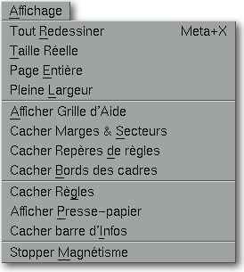

<!-- Documentation Xclamation (c)1994-2000 AXENE contact axene@axene.org>
<html>
<head>
<title>Menu Affichage</title>
</head>

<body BGCOLOR="#FFFFFF" BACKGROUND="Images/back.gif" TEXT="#000000">
<p ALIGN="right">


<p>
<br>
<br>
Le menu déroulant Affichage permet d'accéder à des options
permettant de faire varier divers paramètres d'affichage
de l'interface.
<p>
De nombreuse entrées de ce menu sont doubles. En effet, en
fonction du contexte, l'intitulé d'une entrée peut
varier. Par exemple, si la barre d'information est affichée,
une entrée de ce menu est <i>&quot;Cacher barre d'Infos&quot;</i>
et si la barre n'est pas affichée, l'intitulé de
cette même entrée est <i>&quot;Afficher barre d'Infos&quot;</i>.
<br>
<br>
<hr>
<br>
<center>

<br>
<i><small>
Photo d'écran&nbsp;: Menu déroulant Affichage
</i></small>
</center><p>
<br>
<hr>
<br>
<p>
<h3>Le menu Affichage comporte les entrées suivantes&nbsp;:</h3>
<ul>
  <li><a NAME="redraw_all_menu_entry">
     l'entrée <i>&quot;Tout Redessiner&quot;</i> 
     permet de <b>rafraîchir le plan d'affichage</b>
     dans le document actif. Cette option permet d'éliminer
     des erreurs d'affichage ; elle est à utiliser en premier
     lieu lorsque quelque chose semble erroné dans l'affichage.
     </a><p>
  <li><a NAME="real_size_menu_entry">
     l'entrée <i>&quot;Taille Réelle&quot;</i> 
     permet de <b>changer le facteur de zoom à
     l'échelle 1</b>, dans le plan d'affichage du document actif.
     Elle agit de la même manière que le quatrième
     <a HREF="HBar_Zoom.html#real_scale_icon">bouton icône</a> 
     de la seconde section de la barre horizontale d'icônes 'Zoom'.
     </a><p>
  <li><a NAME="full_page_menu_entry">
     l'entrée <i>&quot;Page Entière&quot;</i> 
     permet de <b>changer le facteur de zoom
     de manière à pouvoir visualiser la page entièrement</b> dans le
     plan d'affichage du document actif. Elle agit de la même
     manière que le troisième
     <a HREF="HBar_Zoom.html#full_page_icon">bouton icône</a>
     de la seconde section de la barre horizontale d'icônes 'Zoom'.
     </a><p>
  <li><a NAME="full_width_menu_entry">
     l'entrée <i>&quot;Pleine Largeur&quot;</i>
     permet de <b>changer le facteur de zoom de manière à
     pouvoir visualiser la largeur de la page entièrement</b> dans
     le plan d'affichage du document actif. Elle agit de la même
     manière que le second 
     <a HREF="HBar_Zoom.html#full_width_icon">bouton icône</a>
     de la seconde section de la barre horizontale d'icônes 'Zoom'.
     </a><p>
  <li><a NAME="grid_menu_entry">
     l'entrée <i>&quot;Afficher/Cacher Grille d'Aide&quot;</i> 
     permet d'<b>afficher ou de cacher la grille
     d'aide magnétique</b> dans le plan d'affichage. La grille sert
     à quadriller, de façon régulière,
     en horizontal et en vertical, le plan d'affichage avec des lignes
     magnétiques de couleur magenta.
     </a><p>
  <li><a NAME="margin_menu_entry">
     l'entrée <i>&quot;Afficher/Cacher Marges &amp; Secteurs&quot;</i>
     permet d'<b>afficher ou de cacher
     les lignes magnétiques de marges et de secteurs</b>. Ces lignes
     magnétiques bleues sont créées, à l'ouverture
     d'un document, tel que défini dans la boîte de dialogue
     '<a HREF="Box_New_Document.html#margins_frame">Nouveau document</a>'.
     La disposition de ces lignes peut être modifiée à
     partir de la boîte de dialogue 
     '<a HREF="Box_Modify_Page.html#margins_frame">Modification de page</a>'.
     </a><p>
  <li><a NAME="ruler_marks_menu_entry">
     l'entrée <i>&quot;Afficher/Cacher Repère de règles&quot;</i>
     permet d'<b>afficher ou de cacher les lignes magnétiques de repères</b>. Ces
     lignes vertes peuvent être amenées sur le plan d'affichage depuis
     les règles du document actif.
     </a><p>
  <li><a NAME="frame_border_menu_entry">
     l'entrée <i>&quot;Afficher/Cacher Bords des cadres&quot;</i> 
     permet d'<b>afficher ou de cacher le bord
     des cadres ayant une épaisseur nulle</b>. Lorsque l'on crée
     des cadres de couleur transparente, sans bords, superposés
     au-dessus d'autres cadres, il est commode de toujours pouvoir
     visualiser leur contour. Par contre, lorsque l'on veut avoir un
     rendu proche de celui obtenu à l'impression, il ne faut
     pas que les bords d'épaisseur nulle apparaissent.
     </a><p>
  <li><a NAME="rulers_menu_entry">
     l'entrée <i>&quot;Afficher/Cacher Règles&quot;</i> 
     permet d'<b>afficher ou de cacher les règles</b>
     du document actif. Cela n'a d'intérêt que lorsque
     les règles sont inutilisées et que l'on veut un espace
     d'affichage le plus grand possible.
     </a><p>
  <li><a NAME="clipboard_menu_entry">
     l'entrée <i>&quot;Afficher/Cacher Presse-papiers&quot;</i> 
     permet d'<b>afficher ou de cacher le presse-papiers</b>.
     Le presse-papiers ne rend qu'un aperçu symbolique de ce
     qu'il contient. Afficher le presse-papiers réduit d'une
     façon significative de l'espace sur le plan de travail.
     </a><p>
  <li><a NAME="hint_line_menu_entry">
     l'entrée <i>&quot;Afficher/Cacher barre d'Infos&quot;</i> 
     permet d'<b>afficher ou de cacher la barre
     d'informations</b>. La barre d'informations donne des renseignements
     brefs sur le mode d'action utilisé et
     sur l'utilité des boutons icônes.
     </a><p>
  <li><a NAME="magnet_menu_entry">
     l'entrée <i>&quot;Activer/Stopper Magnétisme&quot;</i>  
     permet d'<b>activer ou de stopper l'attraction
     des lignes magnétiques</b>. Les lignes de la grille, des marges,
     des secteurs et des repères de règles sont toutes
     potentiellement magnétiques. Le magnétisme se manifeste
     dans certaines opérations de positionnement de cadres ou
     de points dans le plan d'affichage, par l'attraction du curseur
     souris par les lignes magnétiques. Le magnétisme
     permet de placer de manière précise des points ou
     d'aligner parfaitement des cadres.
     </a><p>
</ul>
<br>
<hr>
<p ALIGN="right">
<p>
</body>
</html>
